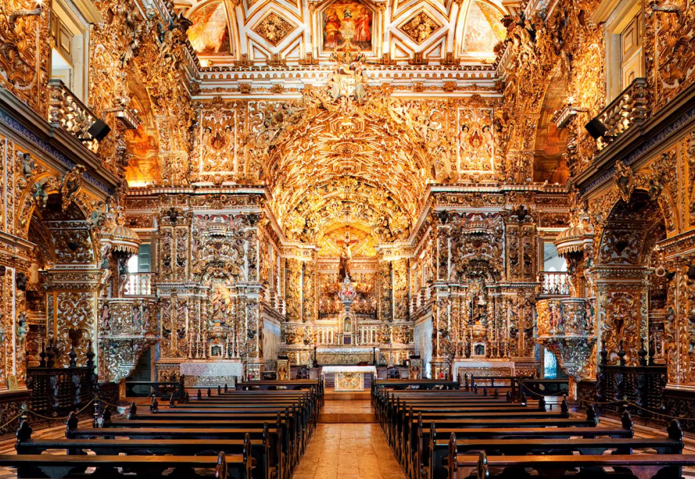
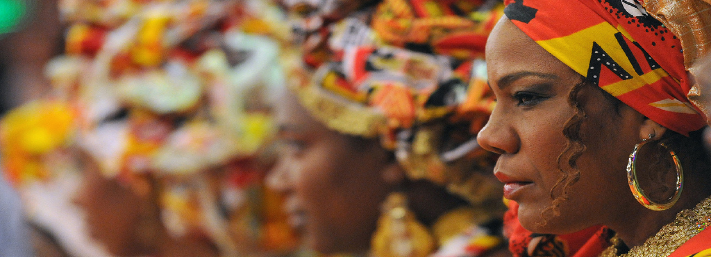
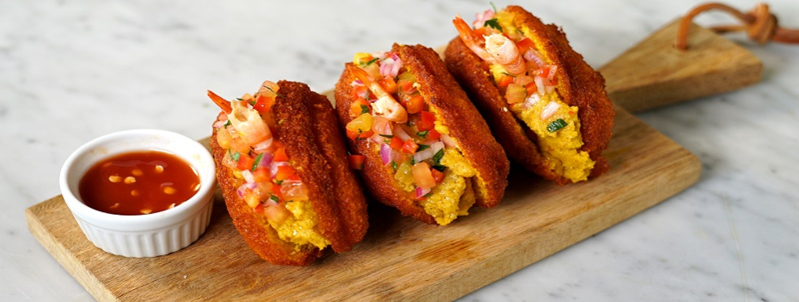
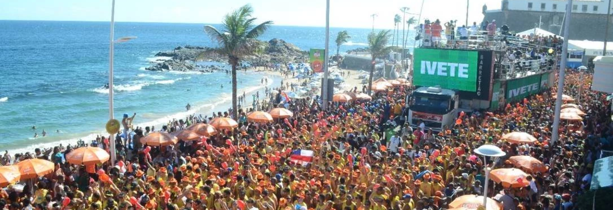
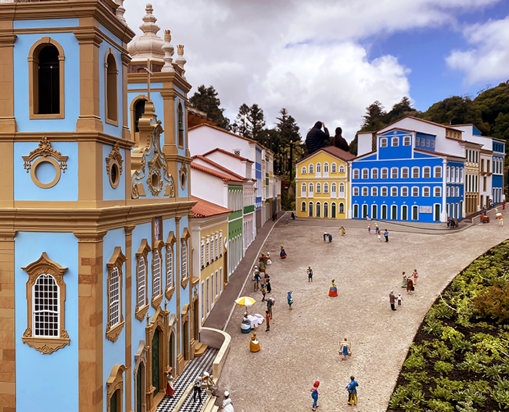

Um paraíso de belas praias, museus e riqueza cultural genuína.
SALVADOR - BA
Sistemas web 2023
TURISMO

SALVADOR BAHIA
Sobre Salvador





Salvador, a
primeira capital do Brasil
, é uma cidade repleta de histórias e cultura. Sua herança colonial
é evidente nas ruas de paralelepípedos e na arquitetura barroca do
Pelourinho, um bairro que é Patrimônio da Humanidade pela UNESCO.
Além disso, é a
cidade mais negra fora da África
, o que se reflete na diversidade étnica e cultural vibrante.
A gastronomia de Salvador é um verdadeiro deleite para os sentidos,
com pratos típicos como o acarajé e vatapá, frutos das influências
africanas e indígenas.
A cidade também é famosa por festas como o carnaval e festas de
largos, e também sua grande diversidade musica.
Salvador foi o berço de inúmeros artistas renomados, como Caetano Veloso e Gilberto Gil, que ajudaram a moldar a música popular brasileira. Além disso, a cidade foi o lar de figuras históricas notáveis, como Zumbi dos Palmares e Maria Quitéria.
A fusão de influências culturais, a beleza de seus pontos turísticos e a paixão de seu povo fazem de Salvador um destino fascinante e uma janela para a rica tapeçaria cultural do Brasil.